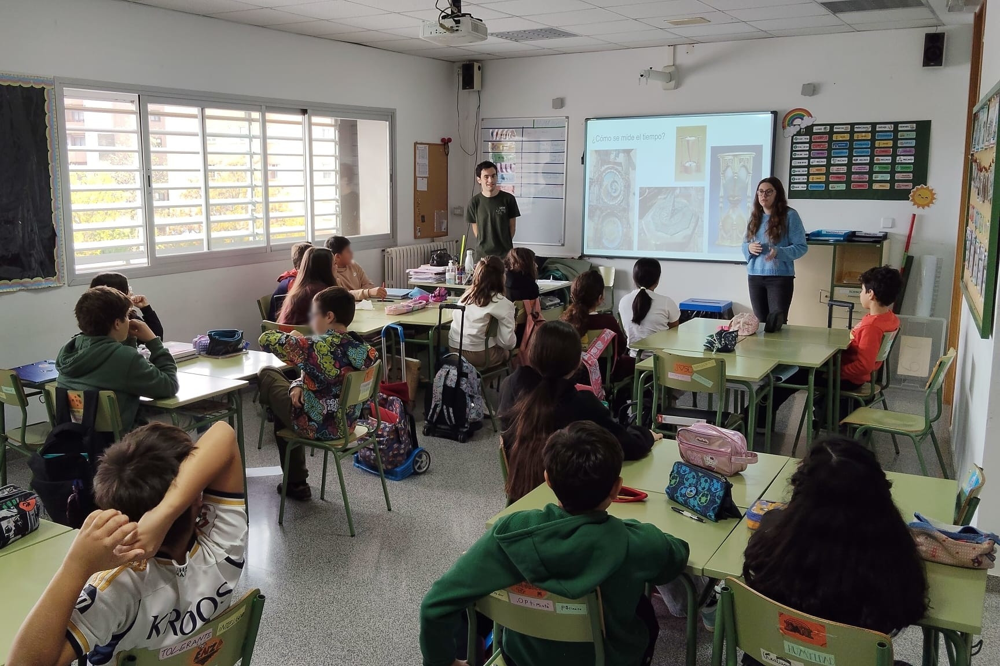
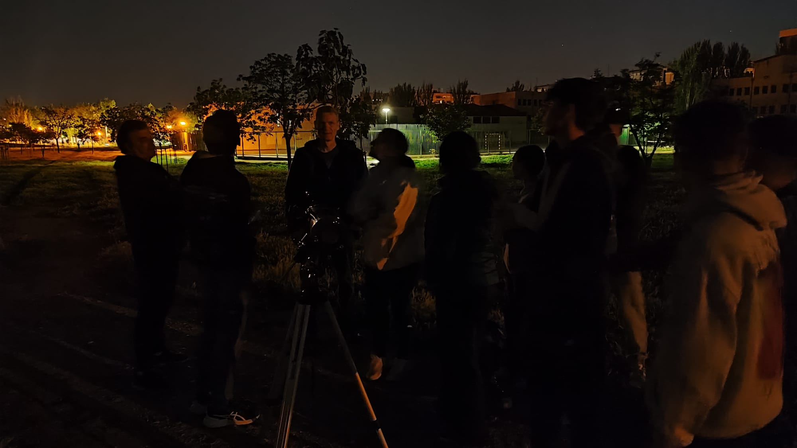
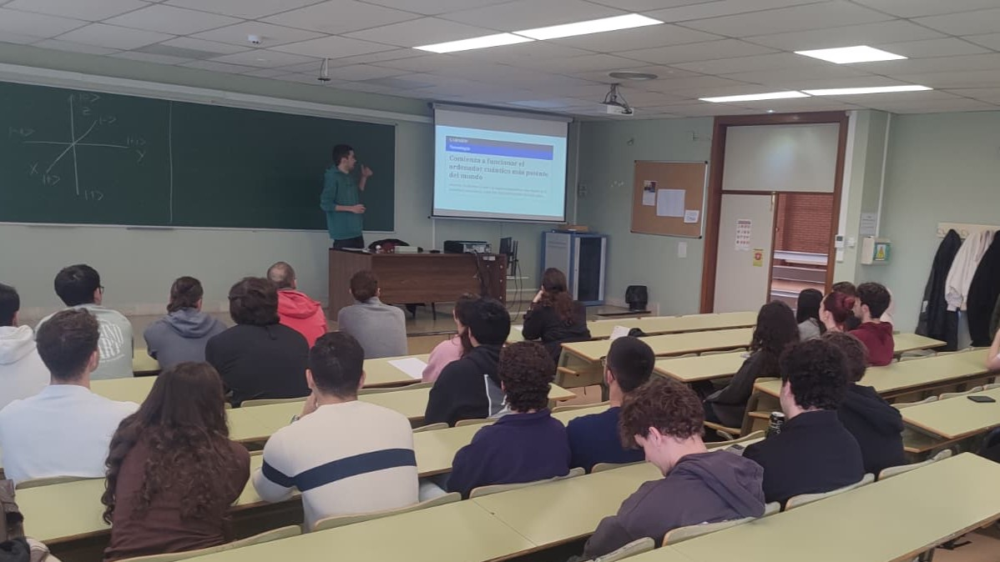
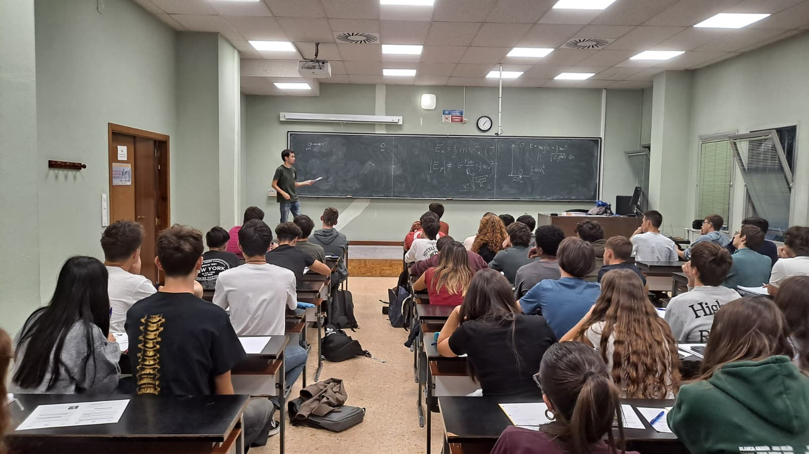

Actividades y recursos

Actividad que involucra pensamiento matemático, conocimiento del medio natural y habilidades plásticas. El alumnado crea su propio reloj solar de papel y aprende a utilizarlo.
Esta propuesta se ha llevado a la práctica con éxito en el CEIP Josefa Amar y Borbón con grupos de 6º de primaria. Y forma parte del repertorio de actividades de la asociación de estudiantes Hache Barra.

Propuesta para elaborar situaciones de aprendizaje. Mencionar algo de eclipses.

Seminario impartido en la EINA en marzo de 2026 desde el Departamento de Informática e Ingeniería de Sistemas. Hubo unos 40 asistentes.
Según los resultados de la encuesta. La mitad de los asistentes no tenía ningún conocimiento previo de computación cuántica. Y el 60% afirmó que la charla fue una muy buena introducción para ellos mismos. El uso del simulador web fue muy bien valorado.

Taller organizado por primera vez durante el curso 25/26 por la delegación aragonesa de la Real Sociedad Española de Física. Inspirado en el Taller de Talento Matemático.
He participado en dos de las sesiones de esta primera edición y en la elaboración de uno de los problemas de la olimpiada regional.